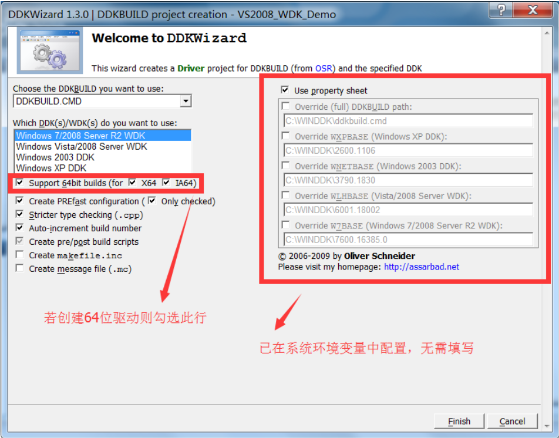

1. 概述
1.1. 前言
适读人群：具备良好的C/C++开发经验，一定的逆向工程基础。
本文仅讲述在Win7 SP1 x64系统中，搭建基于WDK7600的驱动开发环境，不会解析任何驱动开发的代码。
之所以撰写本文，是因为网上充斥着大量已经过时的基于WinXP(x86)-DDK的驱动开发教程、或针对Win(x64)-WDK但不成体系的驱动开发教程，导致新同学在搭建开发环境时遇到的各种问题难以被解决。
所谓工欲善其事、必先利其器，特此记录并整理了在64位系统中，从搭建驱动环境到安装调试驱动程序的每个步骤、可能遇到的问题以及解决方案，以供其他同学做入门参考，降低学习成本。
另外驱动程序是不存在兼容一说的（即x86的驱动只能运行在x86系统、x64的驱动只能运行在x64的系统），但是x86已经被逐步淘汰了，因此本文只会针对x64进行说明（其实x86也是大同小异）。
1.2. 名词解析
| 名词 | 英文原文 | 解析 |
|---|---|---|
| VxD | Virtual Device Driver | 虚拟设备驱动程序 |
| DDK | Device Development Kit | 设备驱动程序开发工具包，广泛应用于XP-x86年代，已淘汰 |
| WDM | Windows Driver Model | Windows驱动模型 |
| WDK | Windows Driver Kit | Windows驱动开发工具 |
| WDF | Windows Driver Foundation | Windows驱动开发框架 |
| MSDN | Microsoft Developer Network | 微软以 Visual Studio 和 Windows 平台为核心整合的开发虚拟社区 提供面向软件开发者的信息服务（包括技术文档、产品下载、Blog等） |
| KMDF | Kernel-Mode DriverFramework | 内核模式驱动程序 |
| UMDF | User-Mode DriverFramework | 用户模式驱动程序 |
| chk | Checked（debug） | 调试版本标识 |
| fre | Free（retail，或release） | 发布版本标识 |
1.3. WDK简史
——部分内容摘于博文：http://lib.csdn.net/article/dotnet/41373
早期的Windows 95/98的设备驱动是VxD，其中x表示某一类设备。从Windows 2000开始，开发驱动程序必以WDM为基础的，但如果使用DDK来开发WDM，其开发难度之大，根本不能奢望像用户模式应用程序开发那样容易。
为改善这种局面，从Vista开始，微软推出了新的驱动程序开发环境WDF。WDF是微软提出的下一代全新的驱动程序模型，它是在WDM的基础上发展而来的，支持面向对象、事件驱动的驱动程序开发，提供了比WDM更高层次抽象的高度灵活、可扩展、可诊断的驱动程序框架。WDF框架管理了大多数与操作系统相关的交互，实现了公共的驱动程序功能（如电源管理、PnP支持），隔离了设备驱动程序与操作系统内核，降低了驱动程序对内核的影响。
在众多WDK版本之中，WDK7600算是承上启下的一个版本。因为在此之前的驱动开发主要都是基于XP的DDK，难度过大且已过时。
微软在Win7/Vista时期对DDK做了集成优化衍生出WDK，且适用于之后的Win8/Win10。
但是微软在WDK7600以后就不再提供独立的内核驱动开发包了，并以Win8/Win10+WDK10 为主提供了集成度更高的WDF（使得Visual Studio可以集开发、编译、安装、部署和调试于一身），但是环境配置差异变化较大，且由于本人不喜欢Win8/Win10系统，有兴趣的同学可以自行研究，本文仅以WDK7600为核心搭建驱动环境。
2. 操作系统与预装组件
- ① 系统版本： Win7 SP1 x64 （必须升级到SP1版本）
- ② C/C++ x64 .NET 库：需安装四个版本 [v2.0.50727] [v3.0] [v3.5] [v4.0.30319]
- ③ Microsoft Office 2007：安装 Visual Studio IDE（VS2008 / VS2010）前置组件
3. 相关工具安装
3.1. 安装清单
部分工具的功能是重复的，请根据下文所建议的两种开发环境选择性安装。
【表 1 安装清单（安装顺序建议与清单保持一致）】
| 工具 | 版本 | 用途 | 备注 | 下载 |
|---|---|---|---|---|
| Visual Studio | 2008 x64 | C/C++程序开发IDE 用于驱动程序编码 |
需先安装前置程序/库： .NET x64 v2.0.50727 .NET x64 v3.0 .NET x64 v3.5 .NET x64 v4.0.30319 Microsoft Office 2007 |
|
| Visual Studio | 2010 x64 | C/C++程序开发IDE 用于驱动程序编码 |
需先安装前置程序/库： .NET x64 v2.0.50727 .NET x64 v3.0 .NET x64 v3.5 .NET x64 v4.0.30319 Microsoft Office 2007 |
|
| Visual Assist X | 10.8.2007 | VS IDE 辅助插件 | 可选安装，提供编码提示、 补全等辅助功能 |
CSDN |
| WDK | 7600 | 微软提供的Win驱动开发工具包 | 提供驱动开发的API（头文件）、 库文件等 |
官方地址 |
| DDKWizard | 1.3a | VS2008驱动模板生成插件 | 可在VS2008中直接创建 驱动程序开发模板 |
官方地址 CSDN |
| ddkbuild.bat ddkbuild.cmd |
1.3a | VS2008驱动程序生成脚本 | 需配合WDK与DDKWizard使用 | 官方地址 CSDN |
| EasySYS | 0.3.2.7 | VS2010驱动模板生成工具 | 生成可被VS2010导入的 驱动程序开发模板 |
CSDN |
| 64Signer | 1.2 | 内核驱动程序数字签名工具 | Win7之后的64位系统的内核 驱动程序必须具备数字签名， 此工具可伪造测试用的数字签名 |
CSDN |
| DriverMonitor | 3.2.0 | 内核驱动程序调试器 | XP x86用于安装、启动内核程序 的调试工具，Win7 x64可能不兼容 |
CSDN |
| InstDrv | 1.3.0 | 内核驱动程序调试器 | Win7用于安装、启动 内核程序的调试工具 |
CSDN |
| DebugView | 4.81 | 内核驱动消息捕获器 | 配合DriverMonitor或InstDrv使用， 用于调试内核程序断点打印消息 |
CSDN |
| VMWare | 11.1.2 | 虚拟机 | 用于搭建隔离环境调试驱动程序 | |
| WinDbg | Windows平台下的 用户态和内核态调试工具 |
用于配合虚拟机双机调试驱动程序 | 官方地址 CSDN |
3.2. WDK的安装与配置
下载WDK的安装镜像GRMWDK_EN_7600_1.ISO，安装到任意目录即可。
本文的安装目录为：E:\04_work\re\WDK
环境变量配置：
- ① 右击【计算机】–>【属性】–>【高级系统设置】–>【高级选项卡】–>【环境变量】
- ② 在【系统变量】中新建四个变量：
| 变量名 | 变量值 | 备注 |
|---|---|---|
| W7BASE | E:\04_work\re\WDK | Win7用， Win7 必须配置 |
| WLHBASE | E:\04_work\re\WDK | Win Vista\2008 用，Win7 必须配置 |
| WNETBASE | E:\04_work\re\WDK | Win 2003 用，Win7可选配置 |
| WXPBASE | E:\04_work\re\WDK | Win XP 用，Win7可选配置 |
注：建议添加所有环境变量
4. 驱动开发环境配置
VS2008 与 VS2010 两种开发环境 任选其一即可 。
若只是开发简单的驱动程序且不涉及到汇编指令，VS2008环境更便捷。但若驱动程序需要嵌入汇编语言，则推荐使用VS2010。
两种开发环境的差异比较如下：
| - | VS2008 + DDKWizard | VS2010 + EasySYS |
|---|---|---|
| 自动生成WDK开发模板 | 支持（IDE内生成） | 支持（IDE外生成，需导入） |
| 需修改的开发配置项 | WDK配置参数（source文件） 编译平台位数 编译命令参数 |
WDK配置参数（source文件） |
| 支持编译位数 | x86（默认） x64（需修改平台和命令参数） |
x86（需修改平台） x64 （默认） |
| 驱动程序签名方式 | 手动关闭系统签名校验 手动对驱动签名 |
手动关闭系统签名校验 手动对驱动签名 |
| 混合汇编 | x86：支持(__asm{}内联汇编) x64：兼容性差(DDK工程无法自动编译*.asm文件) |
x86：支持(__asm{}内联汇编) x64：支持(WDK工程可自动链接到*.asm文件混合编译) |
4.1. 环境1（不推荐）：VS2008 + DDKWizard
4.1.1. VS2008的安装与配置
① 安装VS2008（任意位置即可）
② 打开VS2008 ，设置WDK环境依赖： 【工具】–>【选项】–>【项目和解决方案】–>【VC++目录】 –> 右侧【平台】选择【x64】 ，按下表添加WDK目录（需置顶并确保顺序）：
| - | x64平台（即64位编译环境） | Win32平台（不必配置，仅参考） |
|---|---|---|
| 可执行文件 | &(W7BASE)\bin\x86\amd64 &(W7BASE)\bin\x86 |
&(W7BASE)\bin\x86 &(W7BASE)\bin\x86\x86 &(W7BASE)\tools\pfd\bin\bin\x86 |
| 包含文件 | &(W7BASE)\inc\api &(W7BASE)\inc\crt &(W7BASE)\inc\ddk &(W7BASE)\inc\wdf &(W7BASE)\inc\wdf\kmdf\1.9 &W7BASE)\inc |
&(W7BASE)\inc\api &(W7BASE)\inc\crt &(W7BASE)\inc\ddk &(W7BASE)\inc\wdf &(W7BASE)\inc\wdf\kmdf\1.9 &(W7BASE)\inc |
| 库文件 | &(W7BASE)\lib\win7\amd64 | &(W7BASE)\lib &(W7BASE)\lib\wdf\kmdf\i386\1.9 &(W7BASE)\lib\wxp\i386 |
| 源文件 | &(W7BASE)\src | &(W7BASE)\src |
备：
经测试第②步不论是否在x64平台配置WDK目录也可成功编译DDK（前提是配置了上文的环境变量），而且一旦配置了这些目录，会导致x64平台只能编译DDK项目，无法在编译普通的控制台程序（VS2008的解决方案平台是所有项目共用的，VS2010则是独立的）。所以建议只有在不配置就无法编译DDK的情况下才执行第②步。
4.1.2. DDKWizard的安装与配置
- ① 安装DDKWizard（任意位置即可）
- ② 在WDK根目录下新建文件夹script，把 ddkbuild.bat 和 ddkbuild.cmd 复制进去。
- ③ 修改【系统变量】中【Path】变量值，末尾添加 ;%W7BASE%\script;
- ④ 安装成功后，在VS2008中新建项目时会增加一个 DDK Project 的模板，利用该模板创建WDK项目，会自动调用ddkbuild.cmd 脚本编译驱动程序。
4.1.3. WDK项目创建、配置与发布
① 打开VS2008 ， 【文件】–>【新建】–>【项目】–>【DDK Project】：
② 此处选择【Driver】模板（会自动创建默认接口代码），然后填写WDK项目名称（本文样例项目为VS2008_WDK_Demo），点击【确定】后，如下图配置即可。

③ 为项目添加64位编译器（前面已设置好WDK环境依赖）：点击上方【Win32】 –> 【配置管理器】 –> 【活动解决方案平台】 –> 【新建】 –> 【x64】 –> 【确定】 ：

④ 配置sources文件：sources文件为ddkbuild脚本用于编译驱动程序的配置文件：
一般情况下，只需关注【TARGETTYPE】和【SOURCES】属性即可：
| 属性 | 取值 | 备注 |
|---|---|---|
| TARGETTYPE | DRIVER | 固定值，声明所编译的类型为“驱动” |
| SOURCES | 项目中【Source Files】（*.cpp） 和【Resource Files】（*.rc）中所有文件名称集合 |
值格式如下（其中\表示断行）： SOURCES=A.cpp \ B.cpp \ …. Z.cpp |
⑤ 修改ddkbuild.cmd 脚本入参：【项目】–>【属性】–>【配置属性】–>【NMake】，如下图，把【“生成”命令行】和【“全部重新生成”命令行】的值修改为：
$(DDKBUILD_PATH) -W7X64 checked . -cZ -prefast
⑥ 编译项目：【生成】–>【（重新）生成解决方案】
若上述配置均正确，则编译成功。默认情况下会在项目根路径下生成目录objchk_win7_amd64（注意目录名称带有64位标识才表示该驱动是64位的）。
编译得到的【objchk_win7_amd64\amd64\VS2008_WDK_Demo.sys】即为内核驱动程序。


4.2. 环境2（推荐）：VS2010 + EasySYS
4.2.1. VS2010的安装与配置
① 安装VS2010（任意位置即可）
② 暂不需要任何配置。
之所以不需要类似于VS2008配置WDK环境依赖，是因为使用EasySYS生成的项目会默认配置好这些值。查看WDK环境依赖配置，导入EasySYS生成的项目后，可以通过 右键项目 –> 【属性】–>【配置属性】–>【VC++目录】 查看这些环境配置（注意使用的环境变量是WLHBASE，而非W7BASE，这也是为什么【3.3.2 WDK的安装与配置】需要配置这两个环境变量）。
4.2.2. EasySYS的安装与配置
VS2010 暂无类似于DDKWizard的内置插件辅助创建WDK项目，因此需要EasySYS在外部直接生成WDK项目模板，再由VS2010导入项目（此工具也适用于VS2008）。
- ① EasySYS无需安装，在任意位置运行均可
- ② 填写【工程名称】（即WDK项目名称，本文样例项目为VS2010_WDK_Demo）
- ③ 选择【保存路径】（本文样例路径为D:\01_workspace\c\vs2010\re\VS2010_WDK_Demo）
- ④ 【编译环境】选择【VS 2010】， 【DDK版本】选择【WDK 7600.16385.1】，【目标系统】勾选【Windows 7】，其他任意即可。
- ⑤ 点击【确定】后则会自动生成VS2010项目
4.2.3. WDK项目导入、配置与发布
① 打开VS2010 ， 【文件】–>【打开】–>【项目/解决方案】，选择EasySYS所生成的项目配置文件D:\01_workspace\c\vs2010\re\VS2010_WDK_Demo\VS2010_WDK_Demo.sln，打开项目。
② 为项目添加64位编译器（前面已设置好WDK环境依赖）：点击上方【Win32】 –> 【配置管理器】 –> 【活动解决方案平台】 –> 【新建】 –> 【x64】 –> 【确定】
③ 添加WDK相关文件：右键项目 –> 【添加】 –> 【新建过滤器】 –> 填写【WDK文件】（名称任意即可）。
右键【WDK文件】 –> 【添加】 –> 【现有项】 ，选择【sources】【makefile】【BuildDrv.bat】【clean.bat】四个文件，如下图（其实只需添加sources文件即可）。

④ 配置sources文件：sources文件为ddkbuild脚本用于编译驱动程序的配置文件。
一般情况下，只需关注【TARGETTYPE】和【SOURCES】属性即可：
| 属性 | 取值 | 备注 |
|---|---|---|
| TARGETTYPE | DRIVER | 固定值，声明所编译的类型为“驱动” |
| SOURCES | 项目中【Source Files】（*.cpp） 和【Resource Files】（*.rc）中所有文件名称集合 |
值格式如下（其中\表示断行）： SOURCES=A.cpp \ B.cpp \ …. Z.cpp |

⑤ 编译项目：【生成】–>【（重新）生成解决方案】
若上述配置均正确，则编译成功。默认情况下会在项目根路径下生成目录objchk_win7_amd64（注意目录名称带有64位标识才表示该驱动是64位的）。
编译得到的【objchk_win7_amd64\amd64\VS2010_WDK_Demo.sys】即为内核驱动程序。
5. 驱动程序签名
5.1. 背景
——摘于博文：http://www.yiiyee.cn/Blog/64signer/
微软对于自Vista开始的64位OS有新的数字签名策略，即所有内核驱动都必须是经过可信机构签发过数字证书的，否则系统拒绝加载，其目的是为了加强系统安全防护，使得XP时代来历不明的内核模块无法在系统中容身。
但它却也给正经的内核开发人员带去了一个麻烦：开发过程中会不断生成新的驱动镜像文件，开发者不可能将每一个内部版本都拿去申请数字签名，一来不是所有开发者都可以负担起签证费用，二来签名过程麻烦，会大大延长开发周期。
因此在本文中，无论【环境1】所生成的内核驱动程序【VS2008_WDK_Demo.sys】，抑或是【环境2】所生成的内核驱动程序【VS2010_WDK_Demo.sys】，在签名前均无法被系统加载。
5.2. 自签名工具 - 64Signer的安装与使用
64Signer可以对内核驱动程序签名（未通过MS认证的自签名，仅可用于测试）。
此工具无需安装，直接把【环境1】或【环境2】所生成的内核驱动文件拖拽到64Signer，点击【签名】。若签名成功，右击内核驱动文件 –> 【属性】，会出现【数字签名】选项卡：
6. 驱动程序的加载与调试
6.1. 在虚拟机搭建测试环境
前文所编译生成的【VS2008_WDK_Demo.sys】或【VS2010_WDK_Demo.sys】驱动程序是无法直接在VS2008/VS2010中运行的（即使可以也不建议直接在开发机上运行），因为驱动程序运行在系统内核，稍有不慎就会导致蓝屏。
为此建议转移到虚拟机中执行驱动的装载和调试。
以VMWare虚拟机为例（先预装Win7 x64 SP1系统），先把虚拟机中的操作系统切换到测试模式，具体步骤如下：
- ① 在虚拟机中以管理员身份通过【win+R】 –> 【cmd】 打开DOS控制台。
- ② 输入命令【bcdedit /set testsigning on】 开启系统测试模式。
- ③ 输入命令【bcdedit -set loadoptions DDISABLE_INTEGRITY_CHECKS】，关闭系统的强制校验驱动签名功能。
- ④ 重启系统使得②③设置生效。若设置成功，重启后在桌面右下角会出现当前系统为测试模式的水印（某些系统会屏蔽这个水印，此时可以通过命令【bcdedit /enum】确认testsigning的值是否为Yes以判断系统当前是否处于测试模式）。

【注意】
上述 ②③ 步骤中的两个bcdedit命令只需执行一次，永久生效。
若不执行这两个命令，驱动程序即使签名了也无法被系统加载。
这两个bcdedit命令对应的恢复命令为：
bcdedit -set loadoptions DENABLE_INTEGRITY_CHECKS
bcdedit /set testsigning off
6.2. 驱动加载
常用的加载驱动程序的工具有两个：
- ① DriverMonitor：若加载失败会提示错误原因，但对部分Win7x64系统兼容性不好。
- ② InstDrv：若加载失败无错误原因提示，可运行于x64位系统。
这两个工具的使用比较简单，此处就不再详细说明了。
6.3. 驱动调试
6.3.1. DebugView调试
在驱动程序被DriverMonitor / InstDrv加载、并启动成功后，若驱动程序中有使用了DbgPrint / KdPrint 输出消息（这两个语句的作用类似于开发应用程序时的控制台输出语句），则可同时启动 DebugView 对 dbgPrint / kdPrint 输出的消息进行实时捕获。
由于DebugView是实时捕获消息，因此需要在驱动程序被加载前启动。启动DebugView后，勾选【监视】下的【监视核心】、【启用详细核心输出】、【全部通过】、【监视事件】，捕获的消息如下所示：

6.3.2. VMWare + WinDbg双机调试
此部分扩展内容较多，以后再另建文档作为独立教程详细说明。
7. 附录1：环境搭建常见异常解决方案
7.1. VS2008 / VS2010安装失败
99%的原因都是因为缺失 .NET库 或 .NET的相关配置文件。
尤其是非官方原版的GHOST系统，经常会被第三方出于某些目的修改、移动、删除.NET的库文件。
更为致命的是 VS2008 / VS2010 安装过程中若出错，除了给出异常编码，不会有任何原因提示，目前通过百度找的办法也并非适合普罗大众，这里根据我个人的经验做一个总结：
① Win7下建议安装VS2010，这是微软专门为win7开发的版本
② 确保Microsoft Office 2007已安装成功
③ 确保.NET库文件已全部安装成功，需要同时安装4个版本：
.NET x64 v2.0.50727
.NET x64 v3.0
.NET x64 v3.5
.NET x64 v4.0.30319
④ 若.NET库安装失败，可从其他Win7机器拷贝（或者网上下载）.NET的安装目录到以下两个对应目录：
C:\Windows\Microsoft.NET\Framework
C:\Windows\Microsoft.NET\Framework64
上述4步均执行成功后，再安装 VS2008 / VS2010 一般来说可以畅通无阻了。
但VS有些内置组件在安装过程可能报错，只能独立安装，这里也总结一下：
7.1.1. VS2008 安装过程报错：ISetupComponent::Pre/Post/Install() failed in ISetupManager::InternalInstallManager() with HRESULT -2147023293
异常原因：
安装 Microsoft Office 2007失败。
解决方案：
先尝试重装 Microsoft Office 2007， 若依旧出现此错误，则按如下步骤处理：
- ① 把vs2008镜像文件下的 \WCU\WebDesignerCore\WebDesignerCore.EXE 右键解压到（注意解压出来的文件夹里面有个Office.zh-cn）。
- ② 把 Microsoft Office 2007 光盘或光盘镜像中的Office.zh-cn文件夹 覆盖到 VS2008 的Office.zh-cn。
- ③ 运行第一步解压出来的文件中的setup.exe安装 Microsoft Office 2007
7.1.2. VS2008 安装过程报错：X64 远程调试器未成功安装
异常原因：
缺失 .NET 相关库文件（但是具体缺失了什么缺没有提示）。
解决方案：
① 手动解压 VS2008 的安装光盘，运行安装目录下的这个内置组件：
\Remote Debugger\x64\rdbgsetup.exe
② 此时若内置组件安装失败，就会提示具体失败原因了（一般都是缺失.NET4.0库下的 \CONFIG\machine.config 文件）
③ 在网上下载对应文件放到报错目录，或者重装对应版本 .NET 库应该可以解决。
7.1.3. VS2010 安装过程报错：Error: Installation failed for component Microsoft Visual Studio 2010 64bit Prerequisites (x64). MSI returned error code 1603
异常原因：
缺失 .NET 相关库文件（但是具体缺失了什么缺没有提示）。
解决方案：
① 手动解压 VS2010 的安装光盘，依次运行安装目录下的几个内置组件：
- \WCU\64bitPrereq\x64\VS_Prerequisites_x64_chs.msi
- \WCU\SSCE\SSCERuntime_x64-chs.msi
- \WCU\SSCE\SSCERuntime_x86-chs.msi
- \WCU\SSCE\SSCEVSTools-chs.msi
② 此时若内置组件安装失败，就会提示具体失败原因了（一般都是缺失.NET2.0库下的 \CONFIG\machine.config 文件）
③ 在网上下载对应文件放到报错目录，或者重装对应版本 .NET 库应该可以解决。
7.2. [Error 1275] - 此驱动程序被阻止加载
使用DriverMonitor / InstDrv加载驱动程序成功，但启动时报错：
Error (1275):此驱动程序被阻止加载
异常原因：
在64位系统加载32位驱动程序、或者在32位系统加载64位驱动程序。
解决方案：
根据用于加载驱动的操作系统的位数，使用对应的平台重新编译驱动程序即可。
7.3. [Error 577] - Windows无法验证此文件的数字签名 某些软件或硬件最近有所更改，可能安装了签名错误或损毁的文件，或者安装的文件可能是来路不明
使用DriverMonitor / InstDrv加载驱动程序成功，但启动时报错：
Error (577):Windows无法验证此文件的数字签名 某些软件或硬件最近有所更改，可能安装了签名错误或损毁的文件，或者安装的文件可能是来路不明
异常原因：
以下三个条件任意一条不满足：
- ① 驱动程序已进行数字签名
- ② 操作系统已进入测试模式
- ③ 操作系统已关闭数字签名校验
解决方案：
确保以下四个操作已全部执行：
- ① 使用64Signer对驱动程序进行数字签名
- ② 在DOS下执行bcdedit /set testsigning on命令进入测试模式
- ③ 在DOS下执行bcdedit -set loadoptions DDISABLE_INTEGRITY_CHECKS命令关闭系统的强制校验驱动签名功能
- ④ 重启电脑（使得②③命令生效）
8. 附录2：DDKWizard - ddkbuild脚本参数解析
默认情况下，ddkbuild.cmd 脚本所编译的驱动程序是32位的（即使在VS2008选择了x64编译平台），此情况可从编译驱动程序后的输出目录名称得到验证（如objchk_win7_x86）。
要使得所编译的驱动程序为64位，则需把脚本入参中的平台参数修正为对应的X64平台。命令格式可通过编辑ddkbuild.bat查看。平台参数枚举可通过编辑ddkbuild.cmd查看。修改后重新编译驱动程序，输出目录名称默认会包含64位标识（如objchk_win7_amd64）。
例如本文【环境1】中默认的脚本命令如下，其中平台参数为 -W7（即win7x86）：
$(DDKBUILD_PATH) -W7 checked . -cZ -prefast
修改为对应的64位平台参数 -W7X64 即可编译出64位驱动：
$(DDKBUILD_PATH) -W7X64 checked . -cZ -prefast


9. 附录3：相关知识科普
9.1. Windows程序的运行层级
——摘于博文：http://www.cnblogs.com/findumars/p/5557283.html
在CPU的所有指令中，有一些指令是非常危险的，如果错用，将导致整个系统崩溃，如：清内存、设置时钟等。如果所有的程序都能使用这些指令，那么系统一天死机N回就不足为奇了。所以CPU将指令分为特权指令和非特权指令，对于那些危险的指令，只允许操作系统及其相关模块使用，普通的应用程序只能使用那些不会造成灾难的指令。
Intel的CPU将特权级别分为4个级别：RING0、RING1、RING2、RING3（简称R0、R1、R2、R3）。R0层拥有最高的权限，R3层拥有最低的权限。按照Intel原有的构想，应用程序工作在R3层，只能访问R3层的数据；操作系统工作在R0层，可以访问所有层的数据；而其他驱动程序位于R1、R2层，每一层只能访问本层以及权限更低层的数据。
这应该是很好的设计，这样操作系统工作在最核心层，没有其他代码可以修改它；其他驱动程序工作在R1、R2层，有要求则向R0层调用，这样可以有效保障操作系统的安全性。
但现在的OS，包括Windows和Linux都没有采用4层权限，而只是使用2层：R0层和R3层，分别来存放操作系统数据和应用程序数据，从而导致一旦驱动加载了，就运行在R0层，即拥有了和操作系统同样的权限，可以做任何事情，而所谓的RootKit（拥有“根权限”的工具）也就随之而生了。
9.2. 驱动模式
——摘于博文：http://lib.csdn.net/article/dotnet/41373
运行 Windows 的计算机中的处理器有两个不同模式：“用户模式”和“内核模式”。根据处理器上运行的代码的类型，处理器在两个模式之间切换。应用程序在用户模式下运行，核心操作系统组件在内核模式下运行。多个驱动程序在内核模式下运行时，某些驱动程序可能在用户模式下运行。
当启动用户模式的应用程序时，Windows 会为该应用程序创建“进程”。进程为应用程序提供专用的“虚拟地址空间”和专用的“句柄表格”。由于应用程序的虚拟地址空间为专用空间，一个应用程序无法更改属于其他应用程序的数据。每个应用程序都孤立运行，如果一个应用程序损坏，则损坏会限制到该应用程序。其他应用程序和操作系统不会受该损坏的影响。
用户模式应用程序的虚拟地址空间除了为专用空间以外，还会受到限制。在用户模式下运行的处理器无法访问为该操作系统保留的虚拟地址。限制用户模式应用程序的虚拟地址空间可防止应用程序更改并且可能损坏关键的操作系统数据。
在内核模式下运行的所有代码都共享单个虚拟地址空间。这表示内核模式驱动程序未从其他驱动程序和操作系统自身独立开来。如果内核模式驱动程序意外写入错误的虚拟地址，则属于操作系统或其他驱动程序的数据可能会受到损坏。如果内核模式驱动程序损坏，则整个操作系统会损坏。
9.3. 驱动程序类型
——摘于博文：http://lib.csdn.net/article/dotnet/41373
WDF提供了两个框架：
① 内核模式驱动程序KMDF（Kernel-Mode DriverFramework）：
这类驱动程序作为内核模式操作系统组件的一部分执行，它们管理I/O、即插即用、内存、进程和线程、安全等。内核模式驱动程序通常为分层结构。KMDF是Windows系统底层驱动，文件名为：*.SYS。关于KMDF更多的内容，可参阅 MSDN中“Getting Started with Kernel-ModeDriver Framework ”。
② 用户模式驱动程序 UMDF（User-Mode DriverFramework）：
这类驱动程序通常提供 Win32 应用程序与内核模式驱动程序或其他操作系统组件之间的接口。用户模式驱动程序支持基于协议或基于串行总线（如摄像机和便携音乐播放器）的设备。UMDF是用户层驱动，文件名为：*.DLL。关于KMDF更多的内容，可参阅 MSDN中“Introduction to UMDF”。
无论内核模式的驱动程序或者用户模式的驱动程序，都使用同一环境进行构建，这一环境称为WDK；都采用同一套对象模型构建，采用同一个基础承载，这个基础就是WDF。由于WDF驱动模型提供了面向对象和事件驱动的驱动程序开发框架，大大降低了开发难度。使得像WinDriver、DriverStudio之类的第三方工具也随之退出历史舞台。更重要的，也是微软反复炫耀的是封装了驱动程序中的某些共同行为：例如即插即用和电源管理就属于这种共同行为。因为大多数驱动程序中都需要处理即插即用和电源管理问题（据说这大概要上千行的代码，况且没有相当水平还不一定能处理好）。为了一劳永逸，WDF干脆将即插即用和电源管理封装了进了对象之内，成了对象的缺省行为。
WDF将驱动程序与操作系统内核之间进行了分离，驱动程序与操作系统交互工作交给框架内封装的方法（函数）完成，这样驱动开发者只需专注处理硬件的行为即可。这不仅避免了顾此失彼两面不周的弊端，也由于双方的分离，对操作系统内的某些改动，硬件制造商配套驱动程序的开发都有莫大的好处。
9.4. 驱动的签名与认证
从Win Vista/7 x64 系统开始，微软就要求用户必须使用经过数字签署过的驱动。换言之，没有经过数字签名的驱动是不允许安装到x64系统的。
默认情况下，新编译的驱动程序都是没有数字签署的，若要对其进行数字签署，又可以分为两种形式：
① 自签名：包括从正规渠道付费获得的各种EV签名（如wosign、verisigned等），或由开发者本人创建发布的签名（如用64Signer签名，具体信任策略要看本地策略）
② WHQL认证：只能通过微软官方对驱动进行测试并通过后获得的认证（认证过程极其严格、周期长、费用高，不适合个人开发者），凡是通过WHQL认证的产品均会被授予“Designed for Windows”标识。此类别驱动最大的特点是稳定性高，和微软操作系统的兼容性好（几乎100%兼容）。
特别需要注意的是：自签名和WHQL认证不是同一个东西。
自签名只能证明该驱动是来自可靠的发布者，并且内容未被改变（受信任的合法证书也包含在这个范围）；WHQL认证则是说明微软认可这个驱动。
换而言之，即使驱动程序有合法的签名，但没有通过WHQL认证，也是无法被加载的，因为自Win Vista/7 x64 以后的操作系统在加载驱动时所校验的是WHQL认证，不是自签名。
【表 2 驱动程序在x64系统的各模式下的可装载情况】
| - | - | x64驱动的数字签署方式 | - |
|---|---|---|---|
| 系统模式（x64） | 无数字签署 | 自签名 | WHQL认证 |
| 正常模式（默认） | 不能装载 | 不能装载 | 可以装载 |
| 禁用驱动程序签名 强制检测模式 |
不能装载 （旧版本系统可以） |
不能装载 （旧版本系统可以） |
可以装载 |
| TestSigning 测试模式 |
不能装载 | 可以装载 | 可以装载 |
注：
- ① 32位系统不检查WHQL，只会给出警告。
- ② 禁用驱动程序签名强制检测模式：
临时方式（重启后失效）：【开机按F8】 –> 【禁用驱动程序签名强制】
永久方式（重启后有效）：以管理员身份在DOS控制台输入命令【bcdedit -set loadoptions DDISABLE_INTEGRITY_CHECKS】 - ③ TestSigning测试模式：以管理员身份在DOS控制台输入命令【bcdedit /set testsigning on】
- ④ 较旧版本的系统可以只用方式 ② 实现驱动装载，但现在已经失效了，目前只能通过方式 ③ 实现。 然而某些程序（如游戏）会检测系统是否处于测试模式，否则不予运行，避免被非法驱动（如外挂）Hook。